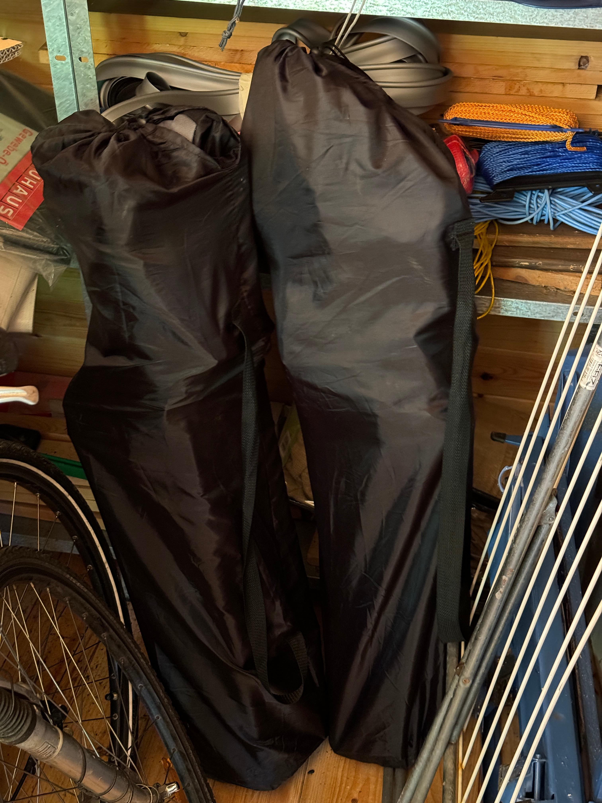

Der Schlüssel ist der gleiche wie vom Haus.
Ein kleiner Wäscheständer steht rechts hinten.
Die beiden Schubkarren müssen zur Erreichbarkeit der Schuppeninhalte nach draußen gestellt werden und können da auch nachts verbleiben, am besten gegen die Wand gelehnt, so dass sich bei Regen kein Wasser drin sammelt.
Der Akku für das E-Bike liegt auf dem Wohnzimmerschrank, das Ladegerät im Schuppen über dem Kompressor und der Schlüssel (hängt an dem Display Etui) in der 3 Schublade von oben.
Fahrräder fahren mit fest aufgepumpten Rädern wesentlich leichter. Zum Aufpumpen kann man sich des Kompressors bedienen. Dieser sollte aber wegen seines hohen Arbeitsgeräusches nur während der Nutzung eingeschaltet sein.
Für entspannten Genuß von Outdoor Events stehen hinten rechts 2 Faltsessel in einem schwarzen Beutel zu Verfügung.
